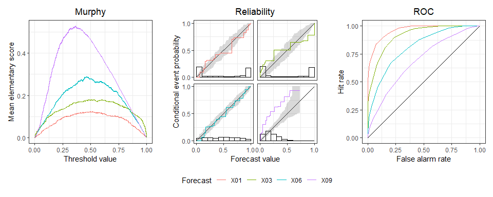

Overall predictive performance is measured by a mean score (or loss), which decomposes into miscalibration, discrimination, and uncertainty components. The main focus is visualization of these distinct and complementary aspects in joint displays. See Dimitriadis, Gneiting, Jordan, Vogel (2023) arXiv:2301.10803.
Installation
Install the latest release of triptych from CRAN with:
install.packages("triptych")Install the development version of triptych with:
# install.packages("devtools")
devtools::install_github("aijordan/triptych")Example
library(triptych)
data(ex_binary, package = "triptych")
set.seed(20230921)
tr <- triptych(ex_binary)
tr
#> # A tibble: 10 × 5
#> forecast murphy reliability roc mcbdsc
#> <chr> <trpt_mur> <trpt_rel> <trpt_roc> <trpt_mcbdsc>
#> 1 X01 <named list[3]> <named list[3]> <named list[3]> <named list[3]>
#> 2 X02 <named list[3]> <named list[3]> <named list[3]> <named list[3]>
#> 3 X03 <named list[3]> <named list[3]> <named list[3]> <named list[3]>
#> 4 X04 <named list[3]> <named list[3]> <named list[3]> <named list[3]>
#> 5 X05 <named list[3]> <named list[3]> <named list[3]> <named list[3]>
#> 6 X06 <named list[3]> <named list[3]> <named list[3]> <named list[3]>
#> 7 X07 <named list[3]> <named list[3]> <named list[3]> <named list[3]>
#> 8 X08 <named list[3]> <named list[3]> <named list[3]> <named list[3]>
#> 9 X09 <named list[3]> <named list[3]> <named list[3]> <named list[3]>
#> 10 X10 <named list[3]> <named list[3]> <named list[3]> <named list[3]>
# 1. Choose 4 predictions
# 2. Add consistency bands (for reliability curves)
# 3. Create patchwork object
# 4. Adjust the title of the legend
dplyr::slice(tr, 1, 3, 6, 9) |>
add_consistency(level = 0.9, n_boot = 100) |>
autoplot() &
ggplot2::guides(colour = ggplot2::guide_legend("Forecast"))
# From existing triptych object
estimates(tr$mcbdsc)
#> # A tibble: 10 × 5
#> forecast mean_score MCB DSC UNC
#> <chr> <dbl> <dbl> <dbl> <dbl>
#> 1 X01 0.0827 0.00474 0.172 0.250
#> 2 X02 0.127 0.0233 0.146 0.250
#> 3 X03 0.134 0.0172 0.132 0.250
#> 4 X04 0.194 0.0587 0.114 0.250
#> 5 X05 0.222 0.0723 0.100 0.250
#> 6 X06 0.180 0.00494 0.0748 0.250
#> 7 X07 0.212 0.0211 0.0590 0.250
#> 8 X08 0.235 0.0263 0.0410 0.250
#> 9 X09 0.303 0.0818 0.0282 0.250
#> 10 X10 0.312 0.0772 0.0148 0.250
autoplot(tr$mcbdsc)
# Or standalone:
# mcbdsc(ex_binary) |> estimates()
# mcbdsc(ex_binary) |> autoplot()